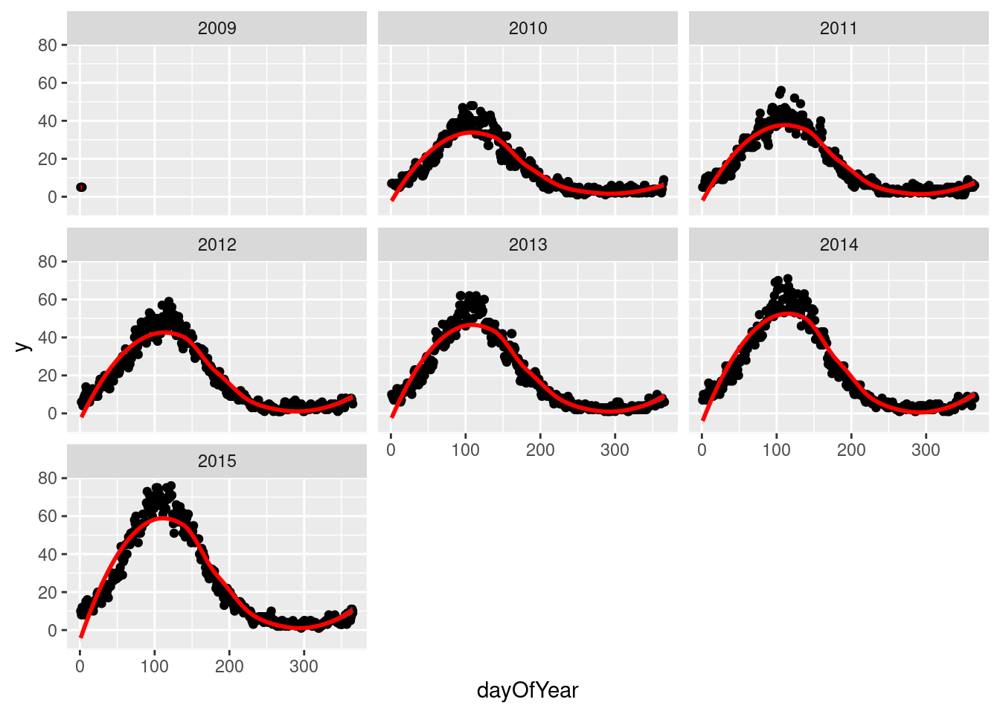
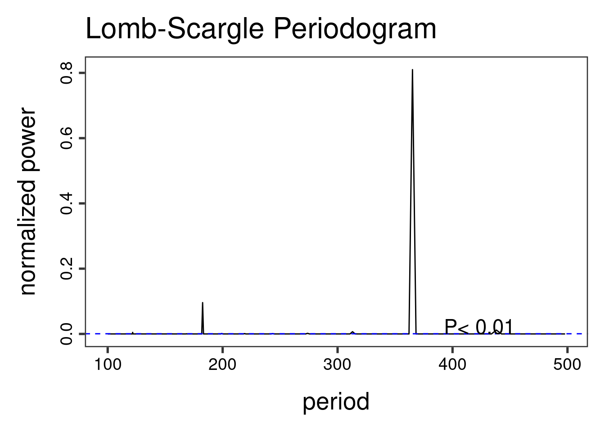
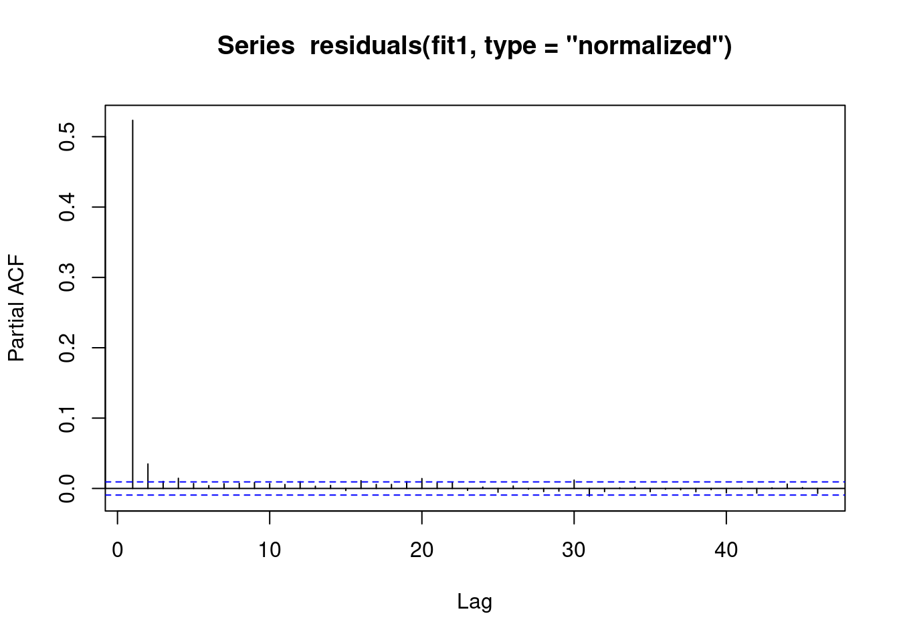
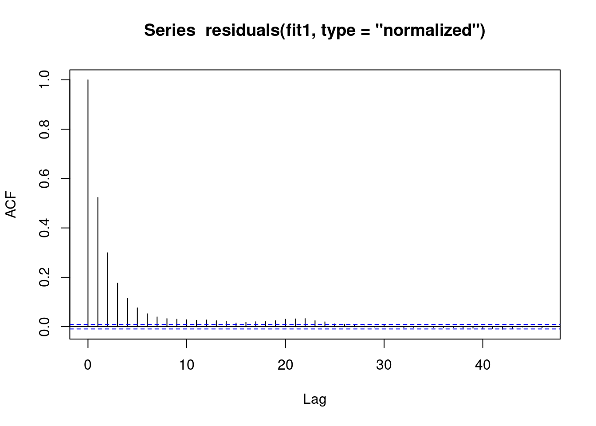
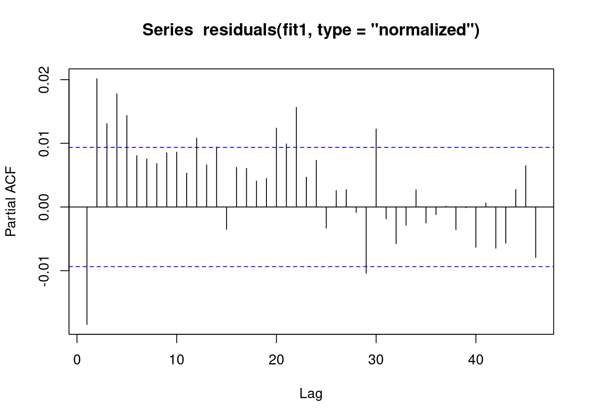
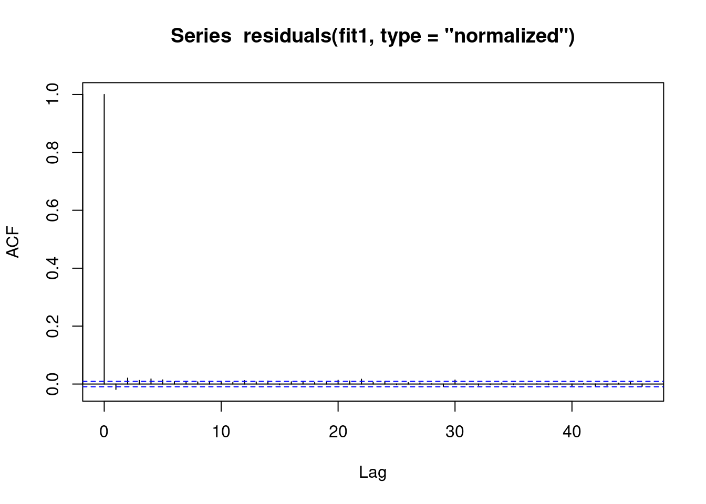

library(data.table)
library(ggplot2)
set.seed(4)
AMPLITUDE <- 1.5
SEASONAL_HORIZONTAL_SHIFT <- 20
fylkeIntercepts <- data.table(fylke=1:20,fylkeIntercepts=rnorm(20))
d <- data.table(date=seq.Date(
from=as.Date("2010-01-01"),
to=as.Date("2015-12-31"),
by=1))
d[,year:=as.numeric(format.Date(date,"%G"))]
d[,week:=as.numeric(format.Date(date,"%V"))]
d[,month:=as.numeric(format.Date(date,"%m"))]
temp <- vector("list",length=20)
for(i in 1:20){
temp[[i]] <- copy(d)
temp[[i]][,fylke:=i]
}
d <- rbindlist(temp)
d[,yearMinus2000:=year-2000]
d[,dayOfSeries:=1:.N]
d[,dayOfYear:=as.numeric(format.Date(date,"%j"))]
d[,seasonalEffect:=sin(2*pi*(dayOfYear-SEASONAL_HORIZONTAL_SHIFT)/365)]
d[,mu := round(exp(0.1 + yearMinus2000*0.1 + seasonalEffect*AMPLITUDE))]
d[,y:=rpois(.N,mu)]
d[,y:=mu+round(as.numeric(arima.sim(model=list("ar"=c(0.5)), rand.gen = rpois, n=nrow(d), lambda=mu)))]6.1 Aim
We are given a dataset containing daily counts of diseases from multiple geographical areas. We want to identify:
- Does seasonality exist?
- If seasonality exists, when are the high/low seasons?
- Is there a general yearly trend (i.e. increasing or decreasing from year to year?)
6.2 Creating the data
The data for this chapter is available at: https://www.csids.no/longitudinal-analysis-for-surveillance/data/chapter_7.csv
6.3 Investigation
We drill down into a few years in fylke 1, and see a clear seasonal trend
q <- ggplot(d[fylke==1],aes(x=dayOfYear,y=y))
q <- q + facet_wrap(~year)
q <- q + geom_point()
q <- q + stat_smooth(colour="red")
q`geom_smooth()` using method = 'loess' and formula 'y ~ x'
The Lomb-Scargle Periodogram shows a clear seasonality with a period of 365 days
// STATA CODE STARTS
insheet using "chapter_7.csv", clear
sort fylke date
by fylke: gen time=_n
tsset fylke time, daily
wntestb y if fylke==1
cumsp y if fylke==1, gen(cumulative_spec_dist)
by fylke: gen period=_N/_n
browse cumulative_spec_dist period
// STATA CODE ENDS# R CODE
lomb::lsp(d$y,from=100,to=500,ofac=1,type="period")
6.4 Regressions
First we create an id variable. This generally corresponds to geographical locations, or people. In this case, we only have one geographical location, so our id for all observations is 1. This lets the computer know that all data belongs to the same group.
When we have panel data with multiple areas, we use the MASS::glmPQL function in R and the meglm function in STATA. In R we identify the geographical areas with random = ~ § | fylke and in STATA with || fylke:.
// STATA CODE STARTS
gen cos365=cos(dayofyear*2*_pi/365)
gen sin365=sin(dayofyear*2*_pi/365)
meglm y yearminus2000 || fylke:, family(poisson) iter(10)
estimates store m1
meglm y yearminus2000 cos365 sin365 || fylke:, family(poisson) iter(10)
estimates store m2
predict resid, anscombe
lrtest m1 m2
// STATA CODE ENDS# R CODE
d[,cos365:=cos(dayOfYear*2*pi/365)]
d[,sin365:=sin(dayOfYear*2*pi/365)]
fit0 <- MASS::glmmPQL(y~yearMinus2000, random = ~ 1 | fylke,
family = poisson, data = d)iteration 1fit1 <- MASS::glmmPQL(y~yearMinus2000 + sin365 + cos365, random = ~ 1 | fylke,
family = poisson, data = d)iteration 1iteration 2print(lmtest::lrtest(fit0, fit1))Likelihood ratio test
Model 1: y ~ yearMinus2000
Model 2: y ~ yearMinus2000 + sin365 + cos365
#Df LogLik Df Chisq Pr(>Chisq)
1 4
2 6 2 We see that the likelihood ratio test for sin365 and cos365 was significant, meaning that there is significant seasonality with a 365 day periodicity in our data (which we already strongly suspected due to the periodogram).
We can now run/look at the results of our main regression.
print(summary(fit1))Linear mixed-effects model fit by maximum likelihood
Data: d
AIC BIC logLik
NA NA NA
Random effects:
Formula: ~1 | fylke
(Intercept) Residual
StdDev: 0.004579768 0.7191519
Variance function:
Structure: fixed weights
Formula: ~invwt
Fixed effects: y ~ yearMinus2000 + sin365 + cos365
Value Std.Error DF t-value p-value
(Intercept) 1.2189925 0.006110555 43797 199.4896 0
yearMinus2000 0.0987374 0.000461394 43797 213.9980 0
sin365 1.3990267 0.001531179 43797 913.6928 0
cos365 -0.5171211 0.001282191 43797 -403.3106 0
Correlation:
(Intr) yM2000 sin365
yearMinus2000 -0.966
sin365 -0.147 0.000
cos365 0.065 -0.001 -0.152
Standardized Within-Group Residuals:
Min Q1 Med Q3 Max
-3.00864057 -0.70228031 -0.06334676 0.64274011 5.21710224
Number of Observations: 43820
Number of Groups: 20 6.5 Residual analysis
We see that there is an AR(1) autocorrelation in the residuals, meaning that our model is not appropriate.
// STATA CODE STARTS
pac resid if fylke==1
// STATA CODE ENDS# R CODE
pacf(residuals(fit1, type = "normalized")) # this is for AR
We see that there is some sort of AR autocorrelation in the residuals, meaning that our model is not appropriate.
// STATA CODE STARTS
ac resid if fylke==1
// STATA CODE ENDS# R CODE
acf(residuals(fit1, type = "normalized")) # this is for MA
6.6 (R ONLY) Regression with AR(1) correlation in residuals
We include correlation=nlme::corAR1(form=~dayOfSeries|fylke) or in other words correlation=nlme::corAR1(form=~time|group) to let the computer know what is the time variable and what is the group variable.
fit1 <- MASS::glmmPQL(y~yearMinus2000+sin365 + cos365, random = ~ 1 | fylke,
family = poisson, data = d,
correlation=nlme::corAR1(form=~dayOfSeries|fylke))iteration 1summary(fit1)Linear mixed-effects model fit by maximum likelihood
Data: d
AIC BIC logLik
NA NA NA
Random effects:
Formula: ~1 | fylke
(Intercept) Residual
StdDev: 2.405145e-05 0.7195239
Correlation Structure: AR(1)
Formula: ~dayOfSeries | fylke
Parameter estimate(s):
Phi
0.5240054
Variance function:
Structure: fixed weights
Formula: ~invwt
Fixed effects: y ~ yearMinus2000 + sin365 + cos365
Value Std.Error DF t-value p-value
(Intercept) 1.2195477 0.010774796 43797 113.1852 0
yearMinus2000 0.0987065 0.000825226 43797 119.6115 0
sin365 1.3988945 0.002739109 43797 510.7116 0
cos365 -0.5169579 0.002292465 43797 -225.5030 0
Correlation:
(Intr) yM2000 sin365
yearMinus2000 -0.979
sin365 -0.149 0.001
cos365 0.066 -0.001 -0.151
Standardized Within-Group Residuals:
Min Q1 Med Q3 Max
-2.99731654 -0.70249782 -0.06736726 0.64264790 5.20296607
Number of Observations: 43820
Number of Groups: 20 6.7 Residual analysis
We see that the vast majority of the autoregression in the residuals has been removed.
pacf(residuals(fit1, type = "normalized")) # this is for AR
We see that the vast majority of the autoregression in the residuals has been removed.
acf(residuals(fit1, type = "normalized")) # this is for MA
We obtain the same estimates that we did in the last chapter.
b1 <- 1.4007640 # sin coefficient
b2 <- -0.5234863 # cos coefficient
amplitude <- sqrt(b1^2 + b2^2)
p <- atan(b1/b2) * 365/2/pi
if (p > 0) {
peak <- p
trough <- p + 365/2
} else {
peak <- p + 365/2
trough <- p + 365
}
if (b1 < 0) {
g <- peak
peak <- trough
trough <- g
}
print(sprintf("amplitude is estimated as %s, peak is estimated as %s, trough is estimated as %s",round(amplitude,2),round(peak),round(trough)))[1] "amplitude is estimated as 1.5, peak is estimated as 112, trough is estimated as 295"print(sprintf("true values are: amplitude: %s, peak: %s, trough: %s",round(AMPLITUDE,2),round(365/4+SEASONAL_HORIZONTAL_SHIFT),round(3*365/4+SEASONAL_HORIZONTAL_SHIFT)))[1] "true values are: amplitude: 1.5, peak: 111, trough: 294"6.8 (STATA ONLY) Regression with robust standard errors
In STATA it is not possible to explicitly model autocorrelation in the residuals (with the exception of linear regression). Since most of our work deals with logistic and poisson regressions, we will be focusing on modelling strategies that work with all kinds of regressions.
The STATA approach to autocorrelation is to estimate more robust standard errors. That is, STATA makes the standard errors larger to account for the model mispecification. This is done through the vce(robust) option.
// STATA CODE STARTS
meglm y yearminus2000 cos365 sin365 || fylke:, family(poisson) iter(10) vce(robust)
// STATA CODE ENDS